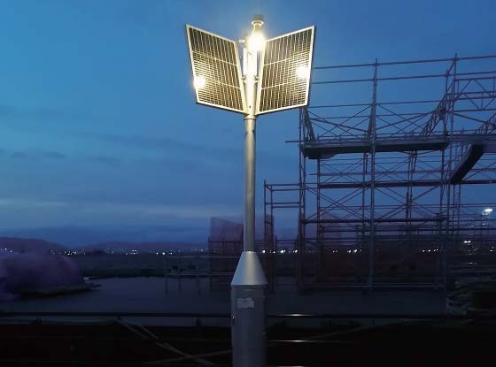
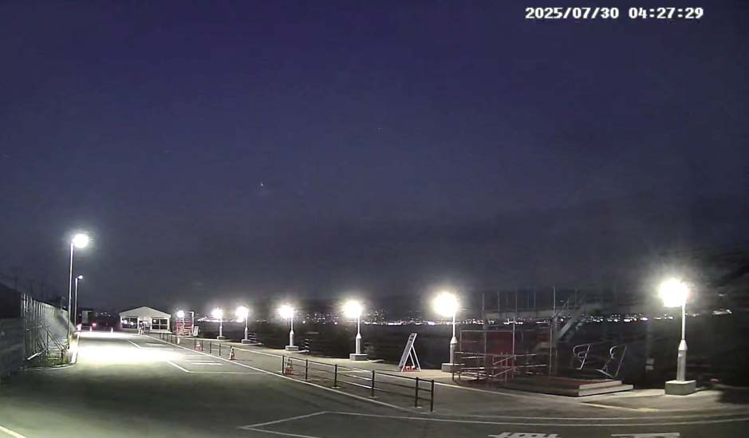
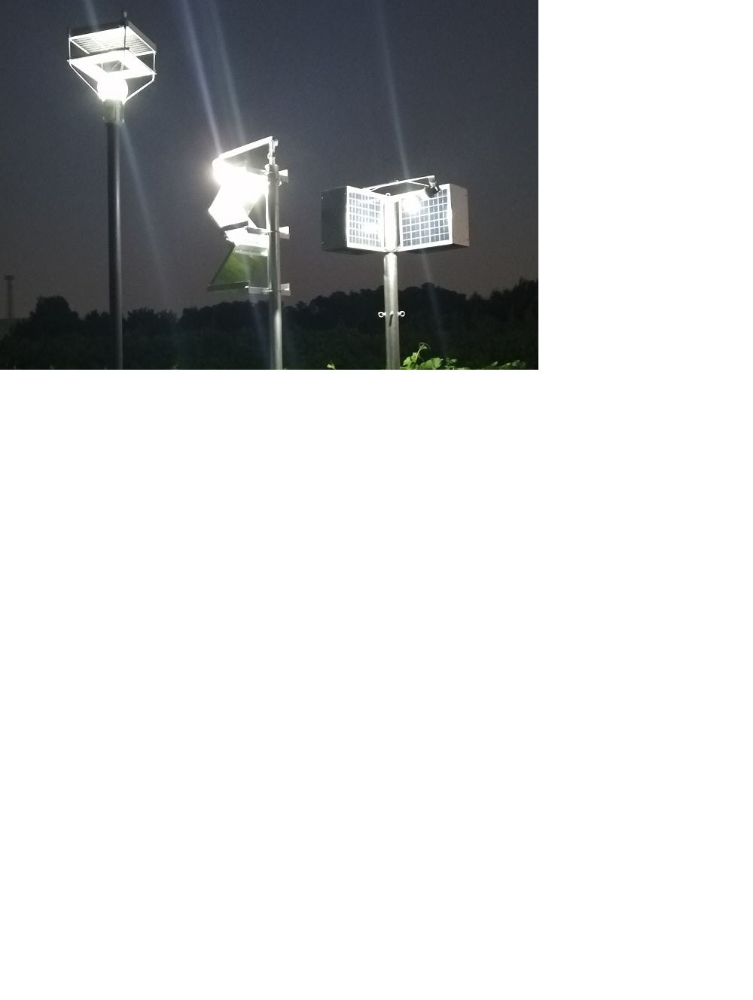

2025年4月〜10月｜春・梅雨・夏・台風期
2025 大阪・関西万博
会場の水上ターミナルエリアに設置。開催期間184日間、商用電源を使わず太陽光発電だけで夜間連続点灯を実現しました。

THE ULTIMATE SOLAR STREETLIGHT
日本の気象条件のもと、1年間、一度も消えなかった。
2025年 大阪・関西万博、そして豊橋総合動植物公園。梅雨も、台風も、冬の短い日照も越えて、ソーラーループ・防災灯は毎晩あかりを灯し続けました。
STORY 01｜期待
無尽蔵の太陽光エネルギーと、省電力のLED。この組み合わせなら、電気料金から解放される──。「究極の街路灯」という触れ込みで、ソーラー式街路灯には大手企業から地域の小さな電気工事店まで、多くの事業者が参入しました。
太陽光エネルギー ＋ LED ＝ 電気料金ゼロ。
誰もが、そう信じていました。
STORY 02｜現実
ソーラー街路灯は、昼に発電してバッテリーに蓄えた電力だけで夜を照らします。曇りや雨が続けば発電量が足りず、蓄えはすぐに尽きてしまう。梅雨、秋の長雨、台風──日本の空の下では、「消える街路灯」が珍しくありませんでした。
災害時こそ必要なあかりが、いちばん必要なときに消えてしまう。
STORY 03｜発想
街路灯は一晩中、光を放っています。その光を、もう一度ソーラーパネルで受けて電気に戻せたら──。誰もが見過ごしていたこのアイデアを、技術として実現したのが「ソーラーループ・防災灯」です。
昼は太陽で、夜は自らの光で発電する。光が循環するから、長雨にも災害にも強い。

MECHANISM
PROOF｜1年間の実証
大阪の海辺から、愛知の冬へ。季節も場所も異なる2つの会場で、日本の気象条件のもと約1年間、毎晩，点灯を続けました。
SPECIFICATIONS
水銀ランプ100Wと比べて消費電力は1/10。商用電力の使用量・電気料金・CO2排出量はゼロです。
自治体の防災照明・避難路、公園や施設の街路灯、企業の商品をモチーフにしたオリジナル灯具まで。導入のご相談をお待ちしています。